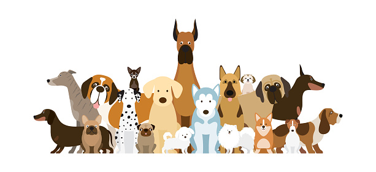
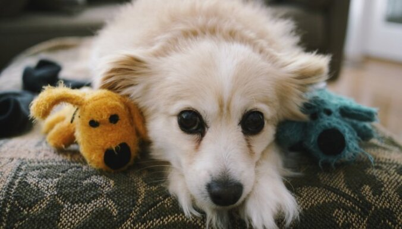

Pirms suņa iegādes jau savlaicīgi jāapdomājas, kāds tas būs – šķirnes suns ar dižciltīgiem vecākiem, suns no patversmes vai bezšķirnes suns.
Tāpat jāpatur prātā – ja suns tiks ņemts no patversmes, kā arī būs bezšķirnes, ir ļoti grūti prognozēt, cik liels tas izaugs, kā izskatīsies un kādas būs tā rakstura īpatnības, jo ļoti daudz ko nosaka ģenētika, kas šai gadījumā nav zināma.
Protams, tāpat dzīvnieku ietekmē arī vide, kur tas dzīvo un aug. “Ja izvēlēts šķirnes suns, ļoti svarīgs faktors ir suņa izcelsme. Ļoti rekomendēju šķirnes suņus iegādāties no pārbaudītām un uzticamām audzētavām, nevis “kaktu” pavairotājiem, kuru mērķis ir peļņa, nevis suņu un viņu pēcnācēju veselība un dzīves kvalitāte,” brīdina Tatjana.
“Būtiski, izvēloties suni, ir arī izvērtēt ģimenes dzīvesveidu. Ja cilvēki ir aktīvi, dodas pārgājienos un labprāt pavada laiku pie dabas, piemēroti būs vidēja vai liela izmēra suņi, kuri varēs izturēt slodzi un gribēs doties garās pastaigās, aktīvi pavadot laiku ar saimniekiem. Savukārt, ja pavadāt daudz laika mājās un darbā, bet bērni dodas uz pulciņiem, jāizvēlas tādas šķirnes suns, kam nav tik lielas vajadzības ilgi staigāt un kas labi jutīsies mājās. Tie var būt maza vai vidēja izmēra sunīši.”
Tāpat jāizvērtē arī potenciālā mīluļa apmatojums. Īsspalvainos un gludspalvainos suņus nevajag bieži mazgāt un ķemmēt – to var darīt, kad ir sezonālā apmatojuma maiņa vai, piemēram, parādās nepatīkama smaka. Savukārt garspalvainajiem suņiem regulāri ir nepieciešama kopšana – piemēram, pūdeļus, Jorkšīras terjerus, šicus, Maltas zīda sunīšus un bišonus obligāti jāmazgā vismaz reizi 10 dienās un jāžāvē ar fēnu, lai to spalva būtu bez savēlumiem, kā arī jāved uz frizētavu reizi pusotrā, divos mēnešos.

Vienalga vai iegādājies populārākās suņu šķirnes mīluli, vai dod mājas kādam patversmes sunim, lai suns justos komfortabli, viņam ir nepieciešamas šīs lietas:
Jebkuram sunim patīk, ka viņam ir sava vieta, kur viņš var netraucēti atpūsties. Lai Tava gulta vai dīvāns nekļūtu par viņa mīļāko atpūtas vietu, iegādājies suņu gultu. Suņa gulta kalpos gan kā vieta, kur suns varēs atpūsties, gan arī viņš lieliski zinās, ka tā ir viņa vieta.
Protams, svarīga lieta ir ēdiena trauki. Viens trauks ir dzeramam ūdenim, otrs ēdienam. Pievērs uzmanību tam, lai trauki ir pietiekami lieli un ja Tev ir liela izmēra suns, tad bļodām ir jāatrodas tādā augstumā, lai sunim ir ērti noliekties līdz traukam.
Suņiem patīk rotaļāties. Lai viņš neplēstu Tavas kurpes vai citas mantas, iegādājies viņam speciālas rotaļlietas. Rotaļlietas ir pieejamas dažādā klāstā – gan mīkstās rotaļlietas, gan izturīgas gumijas rotaļlietas, kuras suns tik viegli nevarēs sagrauzt.
Ja vien nedzīvo vietā, kur Tavs suns vienmēr var brīvi staigāt bez pavadas, tad pirmā lieta, kas ir jāiegādājas, ir kaklasiksna un pavada. Tiklīdz kucēns ir saņēmis visas nepieciešamās potes, vari doties ar suni pastaigās.
Piespiediet pogu lai dotos uz atbilstošo saiti.